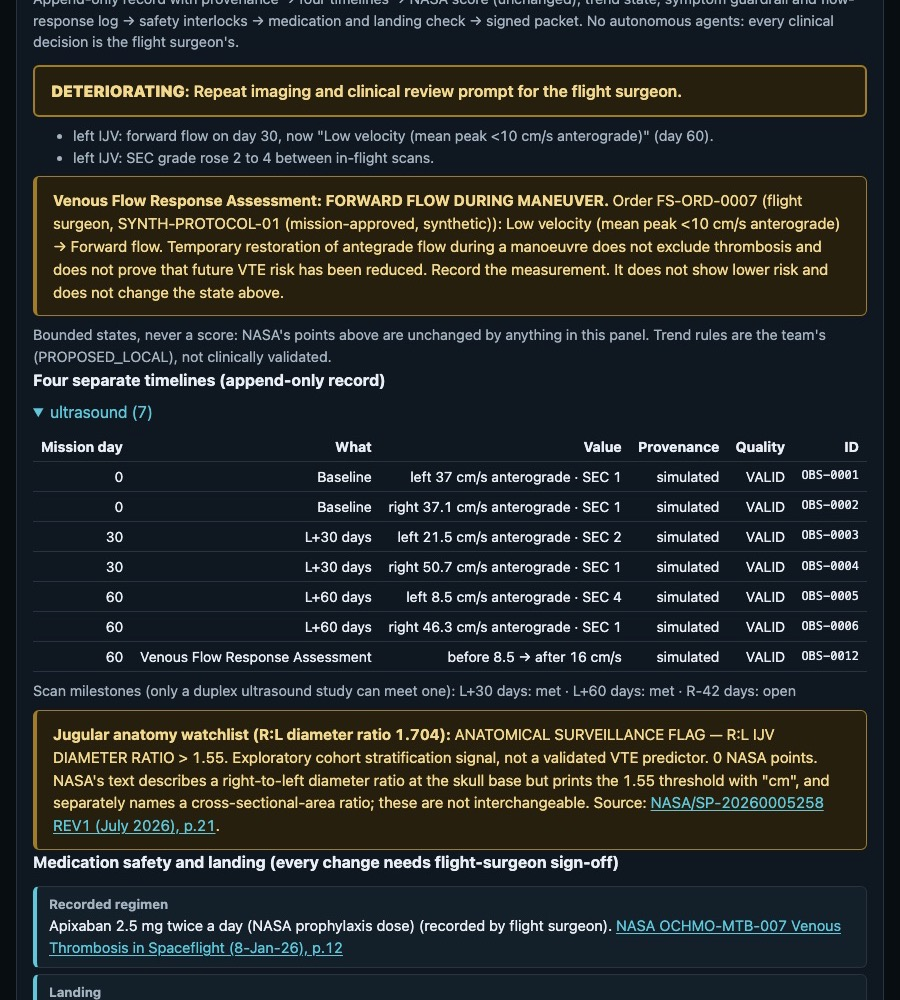

SIMULATION: NOT FOR OPERATIONAL MEDICAL USE · synthetic data
NASA Space Apps Challenge 2026 · Boston (Virtual)
VTE Watch
NASA-referenced clot risk, organized for flight-surgeon review
Case C11: 1 point on NASA's score, then a new change in vision. The app says: start the onboard emergency procedure now.
1 / 7
SIMULATION: NOT FOR OPERATIONAL MEDICAL USE · synthetic data
The problem
8 of 31
astronauts had a left jugular vein flow anomaly in flight
NASA VTE report, July 2026
- NASA published a VTE Risk Score for Astronauts: a table in a PDF.
- Further from Earth, help arrives later.
- Mars: communication latency "0-40 minutes".
- Mars: "No evacuation capability".
Sources: NASA/SP-20260005258 REV1; OCHMO-TB-007
2 / 7
SIMULATION: NOT FOR OPERATIONAL MEDICAL USE · synthetic data
NASA's score, every point explained

Synthetic case C05
9 points
> 6 points = need clinical assessment
Every point shows NASA's rule, the input and the source.
The risk score is not a diagnostic test. New symptoms need their own assessment whatever the score.
3 / 7
SIMULATION: NOT FOR OPERATIONAL MEDICAL USE · synthetic data
Low score, new symptom: the app keeps them apart

Synthetic case C11
- NASA score: 1 point, "no additional action".
- Crew ticks new change in vision. It adds no points.
- The checklist says, at once, onboard: "Start your onboard medical emergency procedure now; do not wait for this app or a ground reply."
- The packet to the ground carries the score, its sources, the scan state and the symptom report.
Not a detector. No listed symptoms does not exclude thrombosis.
4 / 7
SIMULATION: NOT FOR OPERATIONAL MEDICAL USE · synthetic data
Eight components, one human decision

Append-only recordprovenance on every value; nothing interpolated between scans
↓
NASA score (unchanged) · trend state · symptom bypassa wearable or a lab value can never trigger NASA's <10 cm/s rule
↓
Safety interlocks · apixaban and landing checknever "no clot", never a dose: NASA and FDA references only
↓
Flight surgeon signs the packetincomplete data = INCOMPLETE, not decision-ready
Runs onboard with no network. Mars: earliest ground reply 80 min, so nothing safety-critical waits for it.
5 / 7
SIMULATION: NOT FOR OPERATIONAL MEDICAL USE · synthetic data
NASA data, and the proof
4NASA sources used, plus the FDA apixaban label (all cited in the app)
12/12synthetic cases match totals worked out by hand first (C12: the v3 longitudinal case)
161automated tests (74 Python + 87 v3.1 acceptance)
- NASA/SP-20260005258 REV1 · OCHMO-MTB-007 · OCHMO-TB-007 · NTRS 20250002759
- The 11 cases cover every band, every rule edge and the demo case. NASA's score is identical before and after the v3 engine.
Limits: synthetic data; it ranks and organizes NASA-referenced risk, it does not detect or predict clots, and no performance was measured.
6 / 7
SIMULATION: NOT FOR OPERATIONAL MEDICAL USE · synthetic data
Where it could go
- The score next to onboard ultrasound scans on long missions.
- D-dimer scored once in-flight testing exists. NASA says there are no adequate in-flight methods today.
- The same engine for other NASA risk tables; the team's own trend thresholds validated before any real use.
- To validate it: individual-level in-flight jugular ultrasound with clinical outcomes, requested through NASA's Life Sciences Data Archive.
App: drahmed7887.github.io/hack-nasa-space-apps
Repo: github.com/DrAhmed7887/hack-nasa-space-apps
7 / 7